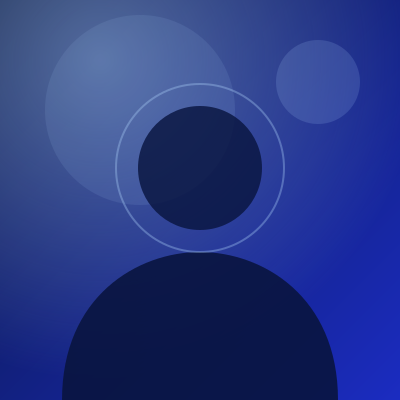

ABOUT AVA · داستان ما
آرشیوی برای موسیقیِ تازه
آوا یک آرشیو مستقل موسیقی است؛ جایی برای شنیدن، کشف و معرفی آثاری که ارزش شنیدهشدن دارند.
۱۴۰۱سال شروع
۱۲۸آهنگ آرشیو
۳۲هنرمند
چرا آوا؟
از ۱۴۰۱ تا امروزآوا با یک ایده ساده شروع شد: پیدا کردن موسیقی خوب نباید سخت باشد. امروز آرشیو ما شامل تکآهنگهای تازه، آلبومهای کامل، ریمیکس و اجراهای ویژه است که با دقت دستهبندی شدهاند.
ما به کیفیت فایل، درست بودن اطلاعات هنرمند و احترام به حقوق صاحبان اثر اهمیت میدهیم. هر اثر پیش از انتشار بررسی میشود تا شنونده با یک آرشیو تمیز و قابلاعتماد روبهرو باشد.
♫آرشیو مرتبدستهبندی بر اساس سبک، تاریخ و هنرمند
✓بررسی کیفیتکنترل فایل، کاور و اطلاعات انتشار

مسیر ما
همکاری با ما ←آوا در یک نگاه
- ۱۴۰۱آوا بهعنوان یک وبلاگ موسیقی کوچک با معرفی تکآهنگهای تازه شروع به کار کرد.
- ۱۴۰۲بخش آلبومها و پلیلیستهای منتخب اضافه شد و آرشیو به بیش از ۵۰ اثر رسید.
- ۱۴۰۳نسخه موبایلپسند سایت منتشر شد؛ حالت شب و پخشکننده سریع به آوا اضافه شد.
- ۱۴۰۴همکاری با هنرمندان مستقل برای انتشار رسمی آثار و راهاندازی بخش «ارسال اثر».
- ۱۴۰۵آرشیو از مرز ۱۲۰ اثر گذشت و صفحه اختصاصی خوانندگان راهاندازی شد.
ارزشهای ما
سه اصل ساده- ۱. احترام به هنرمندحقوق اثر
- ۲. شفافیت در اطلاعاتدقت
- ۳. تجربه ساده شنیدنسرعت
- ۴. دسترسی رایگانهمیشه
تیم آوا
تماس با تیم ←آدمهایی که آوا را میسازند
آرش نیکنامسردبیر و مدیر محتوا
نیلوفر رادتحریریه موسیقی

سامان مهرتوسعه و طراحی